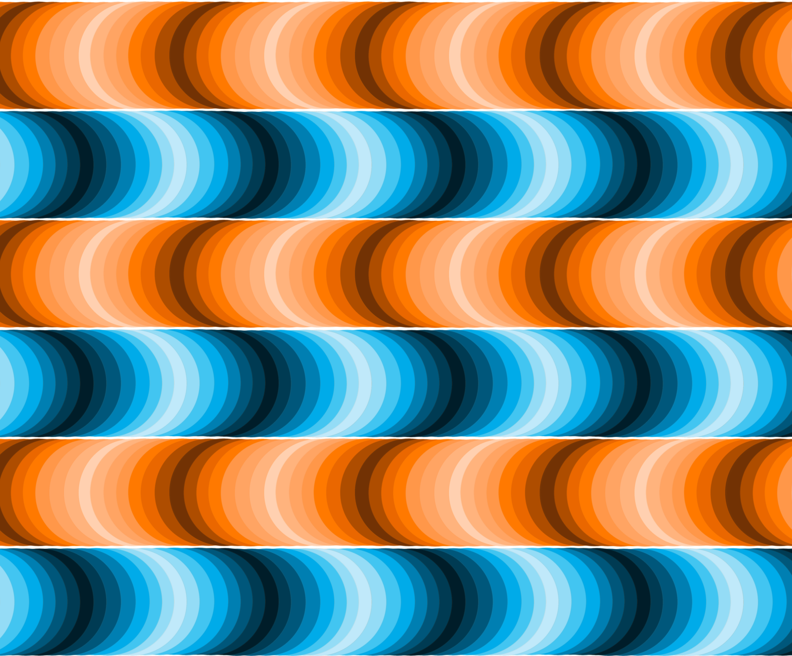
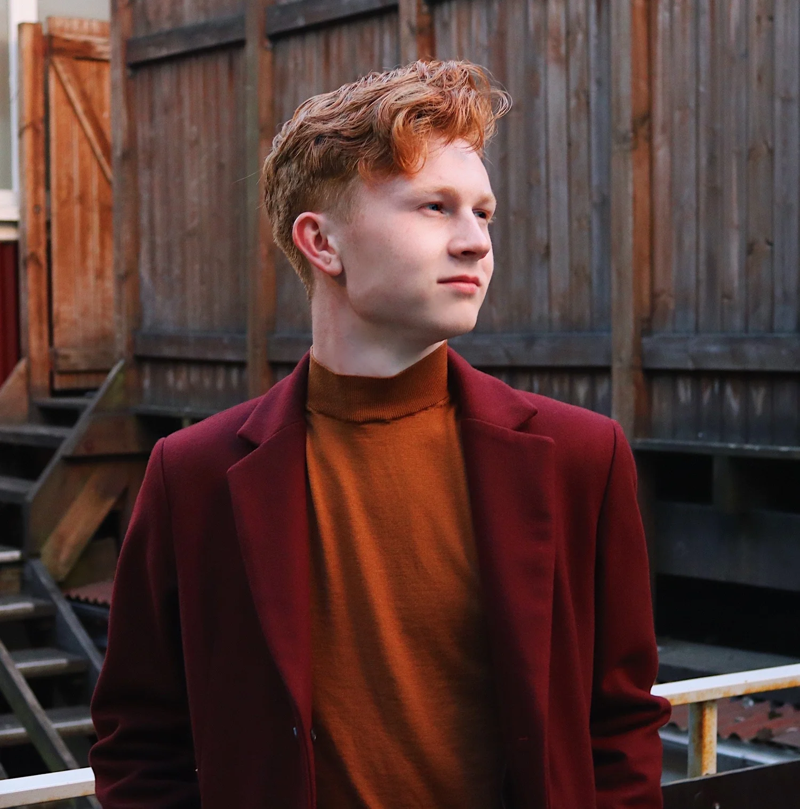

Hi, I'm Blake
I work where data, design, and cities meet.
I'm a data scientist working in government innovation, public interest technology, and civic tech. I'm a lover of data visualization, design, and all things New York.
I build color palettes for the R community, make maps and charts about the places people live, and write about what the numbers turn up.

Selected work
Packages, plots, and places
{MetBrewer}
An R package of color palettes drawn from works in the Metropolitan Museum of Art.
{MoMAColors}
Palettes inspired by the collection of the Museum of Modern Art.
Visualizations
#TidyTuesday charts and #30DayMapChallenge maps, built in R with {ggplot2} and friends.
Designs
Illustration and graphic work made away from the plot window.
Writings
Articles and reports on energy, congress, public health — plus the odd interview.
Resume
Where I've worked, what I'm looking for, and how to get in touch.